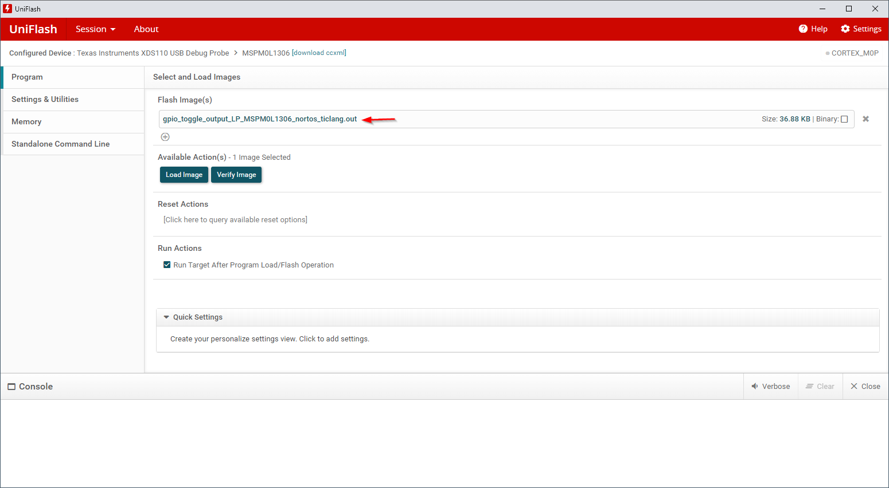

适用于 MSPM0 的 UniFlash 指南¶
1. 引言¶
本指南说明了 UniFlash 工具的安装及其与 TI MSPM0 器件配合使用的一般实践。
本文档不用于详细说明如何使用 UniFlash。 有关详细信息，请参阅 UniFlash 快速入门指南。
2. 先决条件¶
用户应已下载以下各项：
UniFlash 8.2.0 或更高版本（从 ti.com 下载最新版本或在 dev.ti.com 访问云）
已编译的应用程序映像
可使用多种文件格式实现调试器连接，包括 .out、.bin、.hex、.txt
串行连接仅支持 .txt 和 .hex 文件格式，如 TI-TXT
使用您首选的 IDE 和编译器来编译应用程序
UniFlash 可通过以下两种方式连接器件并与器件交互：使用通过 SWD 连接至器件的调试器，或使用器件的引导加载程序和串行 UART 连接。
3. 通过调试器将 UniFlash 与 MSPM0 配合使用¶
UniFlash 可使用调试接口（如 XDS110）来编程器件。可选择器件（如下所示的片上版本）和将用于启动的特定接口。另外，UniFlash 还可以自动检测 MSPM0 LaunchPad（如果已连接）。LaunchPad 包括德州仪器（TI）XDS110 USB 调试探针。
3.1 加载映像。¶
编译采用兼容格式的应用，例如 .out。UniFlash 快速入门指南中说明了所有可能的文件类型。
如图所示上传闪存映像文件。 
根据需要调整擦除设置或其他信息。如果恢复出厂设置，请特别注意，因为 NONMAIN 将在这个过程中擦除。随后用户需负责重新编程 NONMAIN。在恢复出厂设置之前，建议确认此行为是否正确。
此外，如果恢复出厂设置，可选择提供密码。有关详细信息，请参阅相应的器件 TRM。
点击 Load Image。映像应正确加载。

3.2 从内存读取¶
在“Memory”选项卡中，只需选择 Read Target Device，UniFlash 还可检测器件闪存。
4 通过引导加载程序编程器使用 UniFlash¶
引导加载程序编程器是通过器件的串行 UART 连接写入器件的另一种方法，不需要调试器。加载 UniFlash 时，所选器件可通过搜索器件名称并选择器件的引导加载程序选项来使用引导加载程序编程器，如下所示。
4.1 硬件注意事项¶
下面提供了一些必要的器件硬件注意事项。请注意，用于 UART 的引脚是 BSLRX 和 BSLTX，可在器件特定数据表中找到。
在执行与器件通信的任何操作之前，必须调用引导加载程序。可通过多种方式调用，例如使用空白器件开始或使用基于 GPIO 引脚的调用。有关不同调用方法的详细信息，请查阅引导加载程序用户指南。调用时，BSL 将检测接口 10 秒后再进入待机状态，因此对 UniFlash 的首次使用必须在该10 秒内进行。
使用 LaunchPad 时，请参阅特定 LaunchPad 用户指南以了解在使用引导加载程序时的任何特别注意事项。
如果遇到不可靠传输，可能需要在 UART 传输线路上放置上拉。
4.2 NONMAIN 注意事项¶
警告！使用 UniFlash 时，可以从“Erase”设置中选择“Factory Reset”选项来擦除闪存的 NONMAIN 区域。NONMAIN 部分包含有关器件的重要信息，包括引导加载程序接口。如果已擦除，务必要在刷写周期内使用有效 NONMAIN 配置重新刷写器件。否则，器件不会按预期运行，并且可能不可恢复。MSPM0 SDK 包括 SysConfig NONMAIN 配置器，可用于轻松安全地配置 NONMAIN。
器件基于 NONMAIN 区域中的引导配置例程 （BCR）恢复出厂设置有三种情形：
如果不使用密码启用，可以恢复出厂设置。
如果使用密码启用，请选择 Enabled 以在 UniFlash 中使用恢复出厂设置密码。提供的密码必须与当前在器件上编程的密码一致，才能恢复出厂设置。请注意，此恢复出厂设置密码不同于引导加载程序解锁密码（但两个密码均默认为 32 字节 0xFF）。
如果禁用，则无法恢复出厂设置。
有关在NONMAIN 中恢复出厂设置配置的详细信息，请参阅器件的技术参考手册。
4.3 写入器件¶
将 UART 配置为与 NONMAIN 中 BSL 区域的设置匹配。默认配置为 9600 波特率、8 位数据宽度（含1 个停止位）和无奇偶校验（无更改）。COM 端口不会自动填充，并且需基于机器和操作系统更新。
根据需要添加二进制映像。此文本文件将包括在开始时加载的位置。只有在未使用默认密码时，才需要密码。有关密码的详细信息，请参阅使用密码。

根据需要在 Settings & Utilities 部分中调整任何设置。这可包括不同的擦除机制和自定义 CRC 验证。如果修改擦除机制，请参阅 NONMAIN 注意事项以确保器件不会变为不可恢复。
在目标器件上调用 BSL
在 10 秒内，点击“Available Actions”选项卡中的 Load Image。成功加载的程序应显示在控制台底部。

注意，如果映像大小不超过 1KB，则在使用引导加载程序时将显示以下错误。有关详细信息，请参阅已知问题。
4.4 使用密码¶
访问数据的每个 BSL 事务均由 128 位引导加载程序密码提供保护。这默认为 32 字节 0xFF，并在这些事务期间接受检查。默认情况下，开发人员无需提供解锁密码，因为将使用默认密码。这可通过在 NONMAIN 区域内设置 BSL 密码来更改。有关详细信息，请参阅技术参考手册。
如果开发人员编辑 BSL 密码，则用户在刷写器件时必须提供匹配的密码。这以 TI TXT 文件格式完成，使用以下结构，用密码内容替换显示的默认内容。工具不使用地址，因此地址可以为 0x0000。
@0000
ff ff ff ff ff ff ff ff ff ff ff ff ff ff ff ff
ff ff ff ff ff ff ff ff ff ff ff ff ff ff ff ff
q
包含引导加载程序使用的自定义密码的文本文件可以置于所示文件。
4.5 使用引导加载程序从器件读取¶
默认情况下未在 NONMAIN 中启用内存读取，不过可根据需要支持此功能。有关修改 NONMAIN 以更改 BSL 内存读取策略的信息，请参阅器件的技术参考手册。
启用后，可在屏幕左上方的 UniFlash Settings & Utilities 部分中执行从器件读取。
要成功从器件读取，需提供引导加载程序解锁密码。默认密码为 32 个 0xFF 字节，在 UniFlash 中编写为 8 个 0xFFFFFFFF 字。
4.6 使用引导加载程序的当前限制¶
使用引导加载程序时，当前实现存在一些额外限制：
数据包传输的大小上限取决于 BSL 计时器（10）和波特率以及最大缓冲区空间。传输在看门狗时间后不会进行，因此必须在 10 秒内完成传输。例如，一个具有开始和停止位的 10kB 文件需要 10240 * (10 位/数据包)/(9600 位/秒) = 10.67 秒，这会导致超时。在这种情况下，建议使用更高的波特率。
CRC 验证不适用于 1kB 以下大小，因此在这种情况下将显示验证错误。
5. 已知问题和常见问题解答（FAQ）¶
有关详细信息，请参阅已知问题和 FAQ